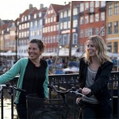
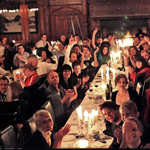

“To create an environment in which knowledge about coffee and its sphere can be obtained”
Wonderful Copenhagen 2011
Posted: 23/1-2011
The aim is to understand the science behind our sensory perceptions. And by stimulating the senses we will improve our tasting skills. Therefore the program will be a mix of aroma sessions, basic taste theory...

Nordic Barista Cup 2011 in Copenhagen
Posted: 22/1-2011
Nordic Barista Cup 2011 will be held in Copenhagen, Denmark.
Dates: 25th - 27th August 2011. The theme for the 2011 seminar is: SENSORY. More information will follow on this page....

2010 Winners: Sweden
Posted: 12/1-2011
Oh my goodness, the final night is here! We are at the most incredible location in all of Oslo—well, at least that is what I think, since I havent seen much of anything else around here. ...